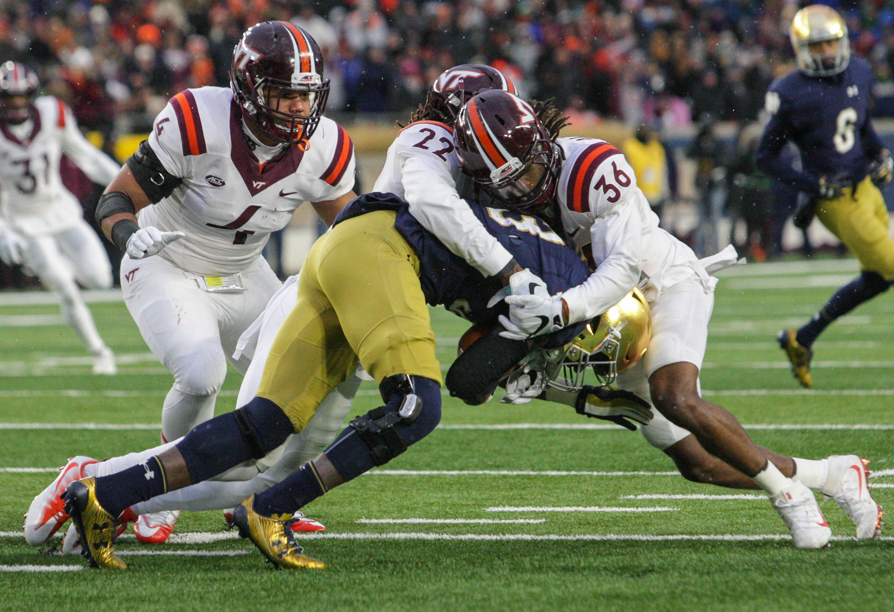
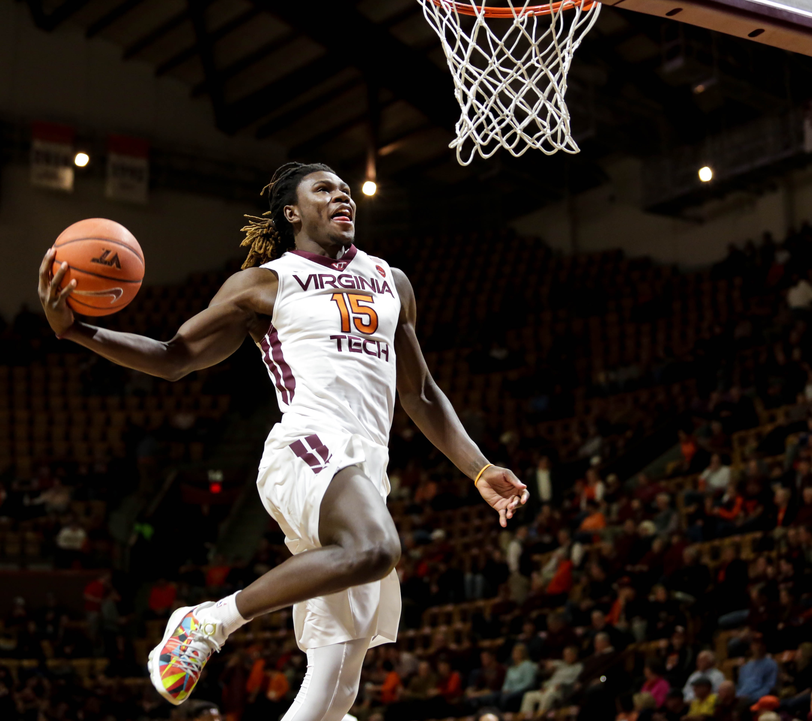

Interests
As an aspiring photojournalist, I am a staff photographer for both the Collegiate Times and Humans of Virginia Tech. I am also involved in a campus ministry called Cru. Currently, I am working on a fictional book/short story. I hope to finish it by the end of this year, but we'll see how that progresses. Below are some photos I have taken while at Viginia Tech.


